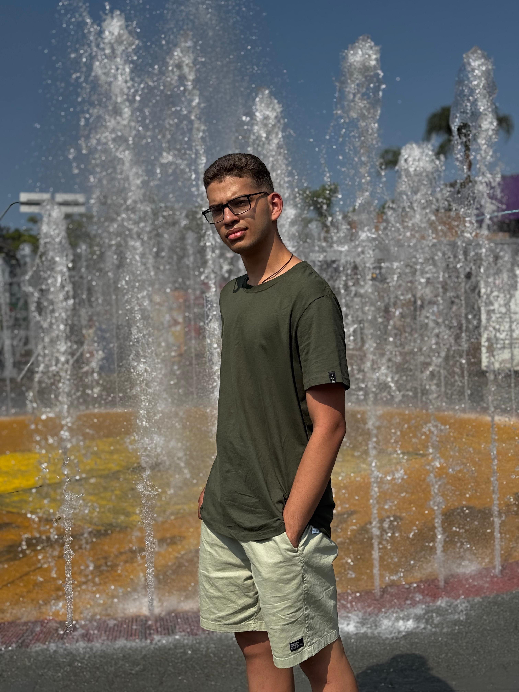

Pedro Henrique Tavares dos Santos
Desenvolvedor de software com foco em criar soluções inovadoras e eficientes. Apaixonado por tecnologia e sempre em busca de novos desafios.

Desenvolvedor de software com foco em criar soluções inovadoras e eficientes. Apaixonado por tecnologia e sempre em busca de novos desafios.